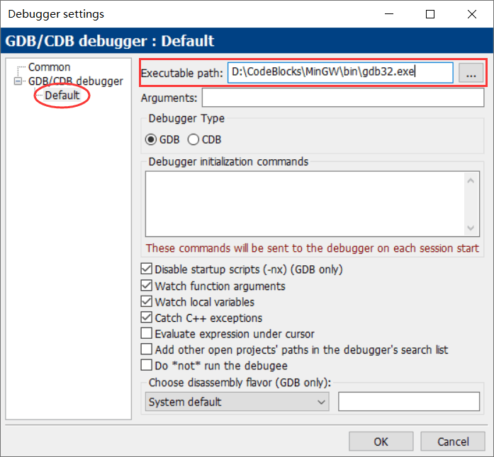
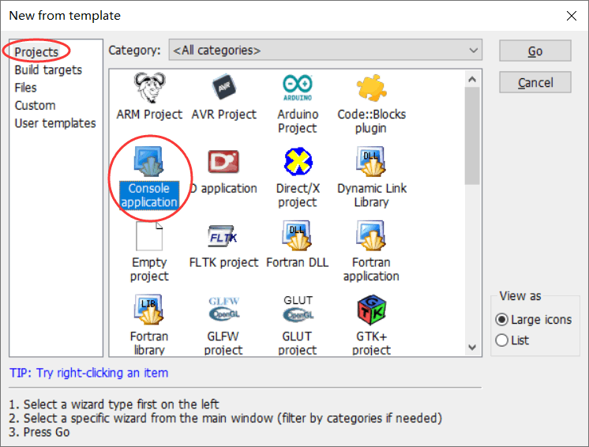
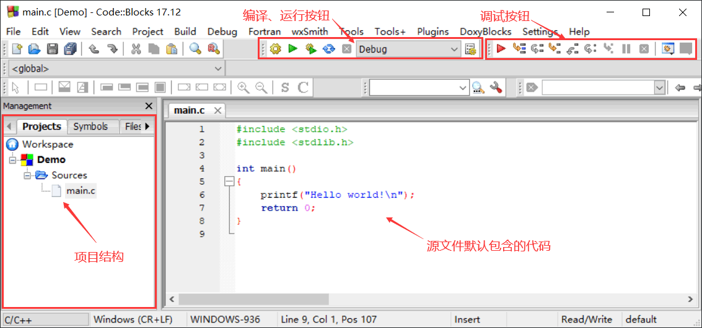
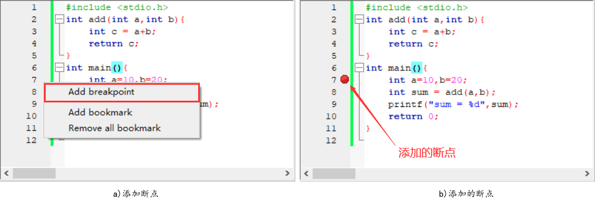
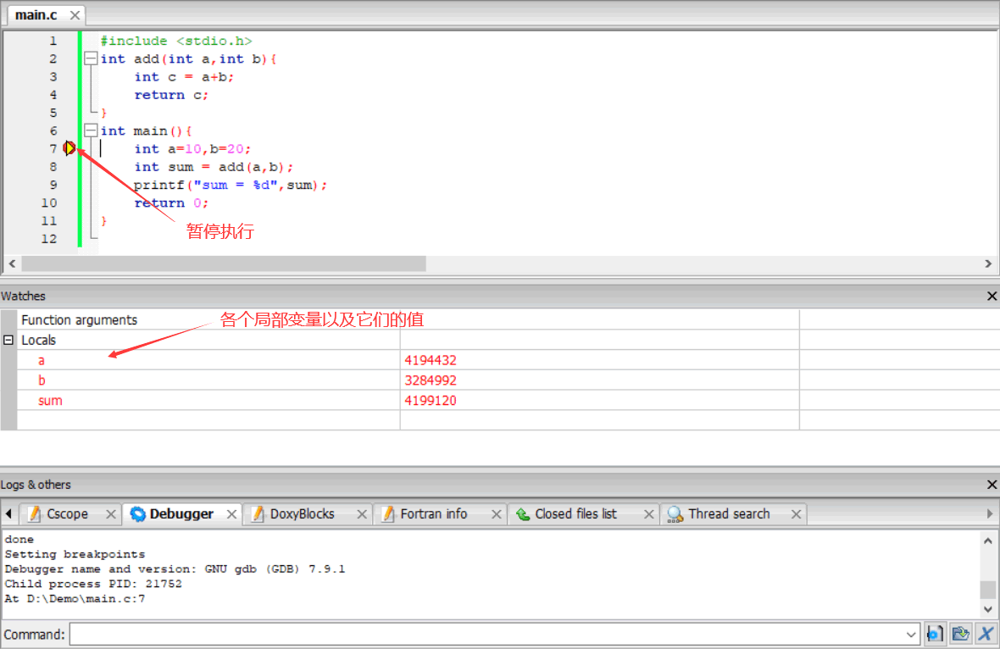
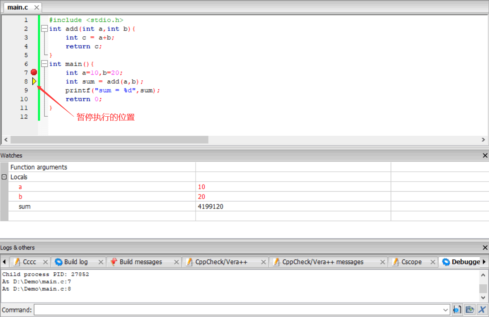
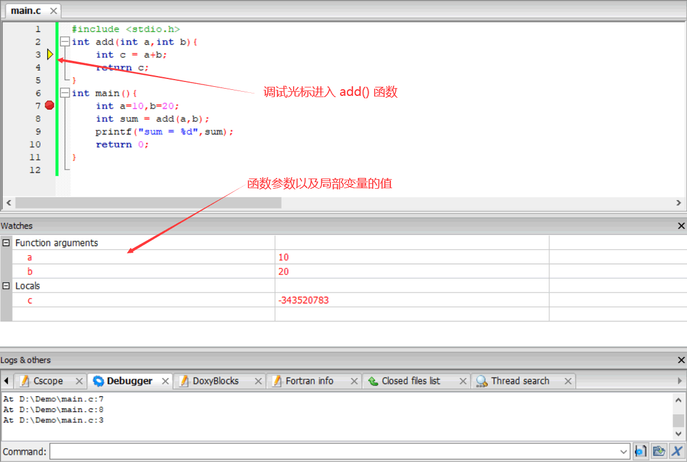
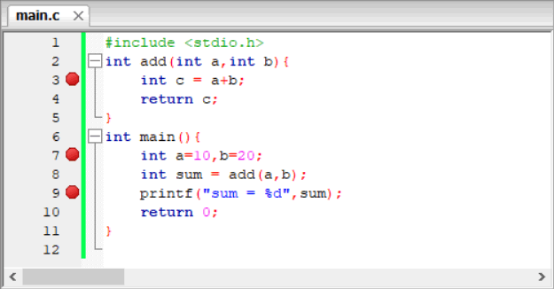

首页 > 编程笔记
Code::Blocks调试程序方法详解
作为一款跨平台、免费开源的 C/C++ IDE，Code::Blocks（后续简称 CodeBlocks）默认支持 GCC、MSVC 等多种编译器，还支持 GDB 或者 CDB 调试器。也就是说，我们不仅可以利用 CodeBlocks 编译、运行 C/C++ 程序，还可以调试程序。
所谓调试程序，就是控制编译器一行一行地执行代码，过程中可以清楚看到每个变量值的变化情况、函数的调用过程等，进而发现程序中隐藏的错误或者低效的代码。 接下来，我们以一段完整的 C 语言程序为例，讲解如何在 CodeBlocks 中调试程序。
在 "Executable path" 一栏中，找到 CodeBlocks 的存储位置（例如笔者将其安装到 D:/CodeBlocks 文件夹），然后进入 /MinGw/bin/ 找到 gdb32.exe，最后点击“OK”，调试器就配置成功了。
在 CodeBlocks 中，调试 C 语言程序需要先建立一个 C语言项目，菜单栏中依次选择“File -> New -> Project...”，会弹出如下的对话框：
点击“Go”，然后自定义项目名称和存储位置（假设为 Demo），创建好的项目如下图所示：
可以看到，新项目中默认包含了 main.c 源文件，还写好了一个最具代表性的“Hello world!”程序。此外，CodeBlocks 提供了多个调试按钮，常用的有以下几个：
接下来，我们将事先写好的测试程序拷贝到 main.c 文件中，然后利用这些按钮开始调试程序。
所谓断点（BreakPoint），可以简单地理解成障碍物，汽车遇到障碍物不能通行，程序遇到断点就会暂停执行。CodeBlocks 设置断点的方法非常简单，想让编译器运行到哪行代码处暂停，就在代码左侧的行号附近右击并选择“Add breakpoint”，如下图所示：
如图 4b) 所示，成功添加断点的标志是代码的行号处增加了一个 ● 红点。接下来，点击图 3 调试工具栏中的 ▶ 按钮，编译器从头开始执行程序，一直到第 7 行代码处暂停，如下图所示：
当程序暂停执行时，借助 Watches 对话框可以看到各个局部变量的值。例如在图 5 中，由于第 7 行代码尚未运行，变量 a、b 和 sum 的值都是无意义的值。借助图 3 调试工具栏中的“Next line”按钮，让编译器继续执行一行代码，三个变量的值如下图所示：
可以看到，变量 a 和 b 的值发生了改变，这是执行第 7 行代码的效果。
注意，第 8 行代码中调用了 add() 自定义函数，如果按 "Next line" 按钮，编译器会在第 9 行代码处暂停执行。如果想调试 add() 函数内部的代码，需要按“Step into”按钮，如下图所示：
通过按“Step into”按钮，调试光标成功进入 add() 函数，Watches 对话框中也会显示 add() 函数参数和局部变量的值，此时再按“Next line”按钮就可以一行一行地执行函数内部的代码了。
CodeBlocks 支持在程序中同时设置多个断点，如下图所示：
编译器执行程序时，每遇到一个断点都会暂停执行。当需要调试的代码量很多时，在程序中设置多个断点并借助“Run to cursor”按钮，一定程度上可以提高调试代码的效率。
所谓调试程序，就是控制编译器一行一行地执行代码，过程中可以清楚看到每个变量值的变化情况、函数的调用过程等，进而发现程序中隐藏的错误或者低效的代码。 接下来，我们以一段完整的 C 语言程序为例，讲解如何在 CodeBlocks 中调试程序。
#include <stdio.h>
int add(int a,int b){
int c = a+b;
return c;
}
int main(){
int a=10,b=20;
int sum = add(a,b);
printf("sum = %d",sum);
return 0;
}
调试前的准备工作
如果您是首次使用 CodeBlocks 的调试功能，必须先手动配置调试器，然后才能正常调试程序。配置调试器的方法也简单，打开 CodeBlocks，菜单栏中依次选择“Settings -> Debugger”，打开下图所示的对话框：

图 1 配置调试器
图 1 配置调试器
在 "Executable path" 一栏中，找到 CodeBlocks 的存储位置（例如笔者将其安装到 D:/CodeBlocks 文件夹），然后进入 /MinGw/bin/ 找到 gdb32.exe，最后点击“OK”，调试器就配置成功了。
在 CodeBlocks 中，调试 C 语言程序需要先建立一个 C语言项目，菜单栏中依次选择“File -> New -> Project...”，会弹出如下的对话框：

图 2 新建 C 语言项目
图 2 新建 C 语言项目
点击“Go”，然后自定义项目名称和存储位置（假设为 Demo），创建好的项目如下图所示：

图 3 创建好的项目
图 3 创建好的项目
可以看到，新项目中默认包含了 main.c 源文件，还写好了一个最具代表性的“Hello world!”程序。此外，CodeBlocks 提供了多个调试按钮，常用的有以下几个：
- Debug/Continue：启动调试；
- Run to cursor：令编译器执行到下一个断点处暂停执行；
- Next line：令编译器执行一行代码；
- Step into：对于调用自定义函数的语句，此按钮可以进入到函数的内部，一步一步执行函数内部的代码；
- Step out：令编译器执行完当前函数后暂停执行；
- Stop debugger：结束调试。
接下来，我们将事先写好的测试程序拷贝到 main.c 文件中，然后利用这些按钮开始调试程序。
CodeBlocks调试程序
默认情况下，程序会瞬间从开头执行到结尾，除非中途出现错误（称为“运行时错误”，比如读写内存失败、数组越界等）。要想让程序暂停执行，就需要设置一个断点。所谓断点（BreakPoint），可以简单地理解成障碍物，汽车遇到障碍物不能通行，程序遇到断点就会暂停执行。CodeBlocks 设置断点的方法非常简单，想让编译器运行到哪行代码处暂停，就在代码左侧的行号附近右击并选择“Add breakpoint”，如下图所示：

图 4 添加断点
图 4 添加断点
如图 4b) 所示，成功添加断点的标志是代码的行号处增加了一个 ● 红点。接下来，点击图 3 调试工具栏中的 ▶ 按钮，编译器从头开始执行程序，一直到第 7 行代码处暂停，如下图所示：

图 5 程序暂停执行
图 5 程序暂停执行
当程序暂停执行时，借助 Watches 对话框可以看到各个局部变量的值。例如在图 5 中，由于第 7 行代码尚未运行，变量 a、b 和 sum 的值都是无意义的值。借助图 3 调试工具栏中的“Next line”按钮，让编译器继续执行一行代码，三个变量的值如下图所示：

图 6 观察各个变量值的变化
图 6 观察各个变量值的变化
可以看到，变量 a 和 b 的值发生了改变，这是执行第 7 行代码的效果。
注意，第 8 行代码中调用了 add() 自定义函数，如果按 "Next line" 按钮，编译器会在第 9 行代码处暂停执行。如果想调试 add() 函数内部的代码，需要按“Step into”按钮，如下图所示：

图 7 调试自定义函数内部代码
图 7 调试自定义函数内部代码
通过按“Step into”按钮，调试光标成功进入 add() 函数，Watches 对话框中也会显示 add() 函数参数和局部变量的值，此时再按“Next line”按钮就可以一行一行地执行函数内部的代码了。
CodeBlocks 支持在程序中同时设置多个断点，如下图所示：

图 8 同时设置多个断点
图 8 同时设置多个断点
编译器执行程序时，每遇到一个断点都会暂停执行。当需要调试的代码量很多时，在程序中设置多个断点并借助“Run to cursor”按钮，一定程度上可以提高调试代码的效率。
总结
如果程序的运行结果不符合我们的预期，不要总指望用眼睛瞅出错误，而是要学会使用调试工具，一步步地调试程序。本节给大家讲解了 CodeBlocks 断点调试程序的方法，对于每个使用 CodeBlocks 编程的初学者，都应该掌握。关注公众号「站长严长生」，在手机上阅读所有教程，随时随地都能学习。内含一款搜索神器，免费下载全网书籍和视频。

微信扫码关注公众号